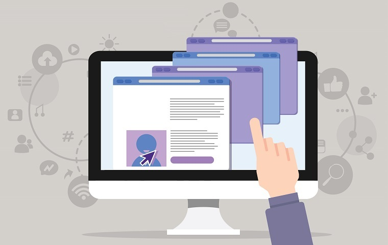

Юзабіліті сайту
Юзабіліті сайту – це комплексний термін, який вказує на зручність взаємодії з ресурсом. У це
поняття входить
дуже багато аспектів, включаючи: інтерфейс, якість контенту, швидкість завантаження сайту і багато іншого.
В умовах конкуренції робилося все, щоб привернути увагу користувачів. Створювалися проекти, наповнені
величезною кількістю функцій. Але практика показала, що занадто складний ресурс відлякує користувачів, тому
ставку потрібно робити на зручний сайт.
Чим простіше і зрозуміліше ресурс, тим вище відвідуваність і конверсія. Якщо ж користувачеві потрібен час
для того, щоб зорієнтуватися, то ви ризикуєте безповоротно втратити клієнта. Адже в сусідніх вкладках у
нього вже відкриті аналоги, які пропонують ідентичні послуги.
Основні критерії юзабіліті – це:
- Ефективність.
- Простота.
- Запам’ятовуваність.
- Помилки.
- Задоволеність.
- Корисність і практичність.
Розглянемо ці критерії докладніше:
- перший пункт показує, наскільки швидко користувачеві вдається зорієнтуватися і знайти те, що він шукав;
- далі оцінюється наскільки зручно переміщатись зі сторінки на сторінку для здійснення різних дій. Велика
кількість спливаючих вікон буде заважати, викликаючи роздратування;
- якщо відвідувач швидко орієнтується на сайті при повторному відвідуванні, це вказує на добре продуманий
ресурс;
- на юзабіліті сайту також впливає здатність сайту направляти відвідувачів і не давати їм
здійснювати
грубі помилки в процесі пошуку потрібної інформації;
- задоволеність – це суб’єктивна характеристика, яка дає можливість оцінити враження від перебування на
ресурсі;
- корисність і практичність – не менш важливий параметр, яким не варто нехтувати. Якщо поряд з позитивним
призначеним для користувача досвідом відсутня корисна інформація, то вам не вдасться домогтися
результату.
Відповідність перерахованим критеріям – гарантія того, що клієнт зробить потрібну дію: замовить послугу,
купить товар, підпишеться на розсилку і т. д.
Принципи юзабіліті сайту:
- Чітка структура.
- Зрозуміла навігація.
- Зручний пошук.
- Висока швидкість завантаження.
- Продуманий дизайн.
- Якісний контент.
- Відсутність технічних помилок.

Чітка структура
Інформація на сайті повинна бути надана у вигляді чітких розділів і блоків. Це дозволить користувачеві
зробити потрібну дію (знайти інформацію або зробити замовлення) за мінімальний час. Зараз для створення
послідовної структури часто використовують ієрархічну структуру, яка виглядає наступним чином: розділ,
категорія, підкатегорія, матеріал або картка товару (якщо мова йде про інтернет-магазин).
На usability сайту впливає тематика контенту. Не потрібно навантажувати сайт зайвою інформацією і
відхилятися від основного напрямку ресурсу, це тільки зіб’є з пантелику цільову аудиторію.
Зрозуміла навігація
Користувач повинен розуміти, де він знаходиться в даний момент і як повернутися на попередню сторінку. Для
цього UI/UX фахівці рекомендують:
- розмістити на всіх сторінках сайту посилання на головну сторінку;
- використовувати так звані «хлібні крихти» – шлях від головної сторінки до тієї, на якій користувач
виявився в даний момент;
- скласти карту сайту – особливо актуально для великих ресурсів – допомагає швидко зорієнтуватися і знайти
потрібний розділ.
Зручний пошук
Правила юзабіліті передбачають використання пошукового засобу з помітною кнопкою. Це життєва необхідність
для багатосторінкового ресурсу.
Висока швидкість завантаження
Швидке завантаження сторінок – важливий фактор. Вирішити це завдання можна різними способами: прибрати зайві
графічні елементи, видалити анімовані заставки, скоротити кількість рекламних банерів. Головне, щоб ці дії
не вплинули на зміст сторінок негативним чином.
Продуманий дизайн
Надзвичайно великий і впливовий аспект, який ускладнюється суб’єктивністю. Те, що подобається одному, не
сподобається іншим, тому тут не радять експериментувати. Використання стандартних і мінімалістичних рішень,
які не відволікають від основної інформації – це основи юзабіліті.
Якісний контент
Інформація – те, навіщо приходять на сайт. Якість контенту має бути на висоті і відповідати вимогам SEO-оптимізації. Щоб домогтися гарних
результатів, тексти необхідно: структурувати, використовувати цікаві заголовки, подавати інформацію
зрозуміло, ємко і по темі. Важливо також перевіряти публікації на помилки і в розумних кількостях
використовувати графічні матеріали.
Відсутність технічних помилок
Технічний аудит – важливий етап, який допоможе позбутися від битих посилань, продубльованих сторінок,
зайвого і непотрібного коду і інших помилок, які впливають на роботу сайту.
Які бувають способи юзабіліті тестування?
Аналіз юзабіліті проводиться з двох позицій: якісної і кількісної. У першому випадку ресурс перевіряється на
функціональність, якість контенту і стабільну роботу, у другому – час відгуку, швидкість завантаження
сторінок, пошуку потрібної інформації і т. д. Раніше ми вже розглянули всі ці параметри.
Існують і інші способи перевірки, які необхідно використовувати, якщо ви помітили різке зниження
відвідуваності, глибини перегляду, збільшення показника відмов і т. д. Все це вказує на те, що потрібний
ретельний аналіз юзабіліті сайту:
- дослідження статистики – відстеження активності користувачів, яке проводиться спеціальними
інструментами, найпопулярніші з них: Яндекс. Метрика, Google Analytics і Bitrix;
- оцінка відгуків відвідувачів – передбачає взаємодію з цільовою аудиторією за допомогою форми зворотного
зв’язку;
- тестування через веб-інструменти – використання спеціалізованих сервісів, які перевіряють сайт на
помилки;
- спостереження за фокус-групою – формування команди аналітиків, які будуть виконувати певні дії, і
озвучувати свою думку по темі;
- перевірка дій користувачів – спостереження за діями користувача на ресурсі з подальшим аналізом
поведінкових факторів.
У веб-студії WebTune ви можете замовити оцінку і
поліпшення юзабіліті сайту. Для цього у нас працюють досвідчені UX-фахівці, які проведуть
ретельний аналіз
ресурсу, знайдуть найслабші місця, складуть чек-лист і розроблять алгоритм щодо усунення помилок. Зрозуміло,
провести перевірку сайту на відповідність основним критеріям можна самостійно. Але без відповідного досвіду,
навичок і знань, ви отримаєте тільки узагальнені дані і не зможете провести глибоку експертизу.
Сподіваємося, що перерахована в статті інформація допомогла вам зрозуміти, що таке юзабіліті і чому воно
важливо.